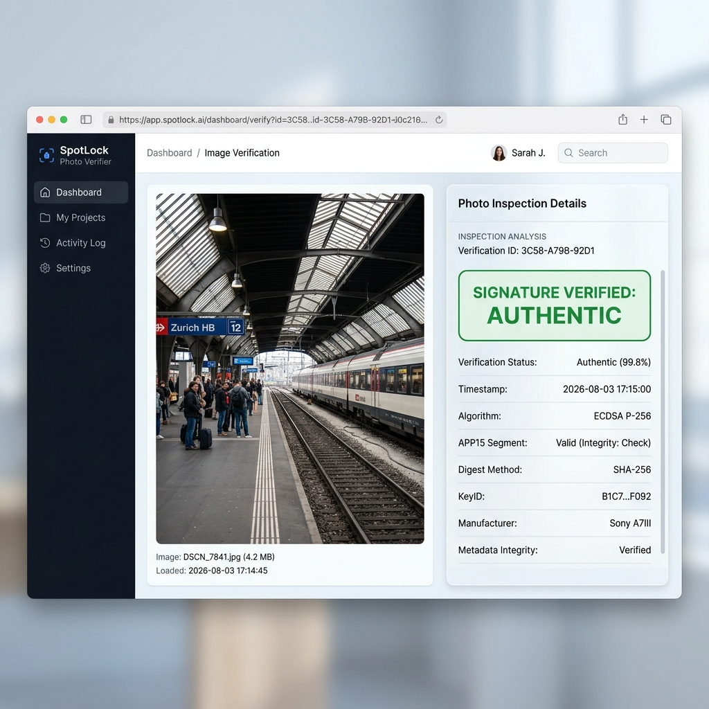

地下駅や地下施設など、電波が届きにくい場所でも撮影と署名処理を実行できます。専用の検証ツールで、画像データ、記録時刻、署名の組み合わせが一致するかを確認できます。
電波が届きにくい現場での撮影と署名データの整合性確認
撮影と署名処理は、インターネットへリアルタイム接続せずに実行できます。
署名処理時に端末へ記録された時刻を、画像データとともに署名して格納します。
JPEG画像内にデータを保持するため、標準の画像ビューアでそのまま閲覧できます。
署名後に画像や記録情報だけが変更され、対応する署名が更新されていない場合、署名不一致として検知できます。
Web検証ツールにおける実際の画面と判定表示

画像内に含まれる公開鍵を使用した結果、画像データ、記録時刻、署名の組み合わせが検証条件に一致した状態です。
画像データ、記録時刻、署名の組み合わせが検証条件と一致しない状態です。
SpotLock-Cameraで撮影された写真（JPEG）をアップロードして、署名とデータの整合性を直接検証できます
署名時に画像と記録情報を紐付け、検証ツールで確認する技術構造
| 項目 | 仕様表記 | 説明 |
|---|---|---|
| 署名アルゴリズム | ECDSA P-256 (SHA256withECDSA) | 非対称鍵による電子署名処理 |
| JPEG 埋め込み構造 | JPEGのAPP15セグメントを利用した独自データ構造 | JPEG規格の 0xFFEF (APP15) 領域に挿入する独自構造化データ |
| 識別コード | "SPOTLOCK" (0x53504F544C4F434B) | セグメント冒頭の 8 バイト ASCII 識別用文字列 |
| 署名対象データ | Timestamp String + JPEG Binary | 署名処理時に端末へ記録された時刻文字列（ミリ秒）と画像データ |
| 位置情報の扱い | 位置情報 (GPS) 不使用 | 撮影および署名処理に位置情報を使用しない仕様 |
検証ツールが直接確認する事実と前提条件
検証ツールは、画像内に含まれる公開鍵を使用して、画像データと記録時刻に対する署名の整合性を確認します。
第三者が新しい鍵ペアでデータ全体を再署名し、その公開鍵も画像へ格納した場合、署名検証自体は成功する可能性があります。
システム利用における技術的な確認限界と鍵管理の仕様について
本アプリは Android Keystore を使用し、端末ごとに署名鍵ペアを生成します。v2形式では画像内に公開鍵を含め、その公開鍵を使って署名を検証します。検証ツールが公開鍵の信頼性を別途確認しない構成では、第三者が自身の鍵で再署名したデータについても、署名の整合性検証が成功する可能性があります。
{kind=link}
{kind=link}